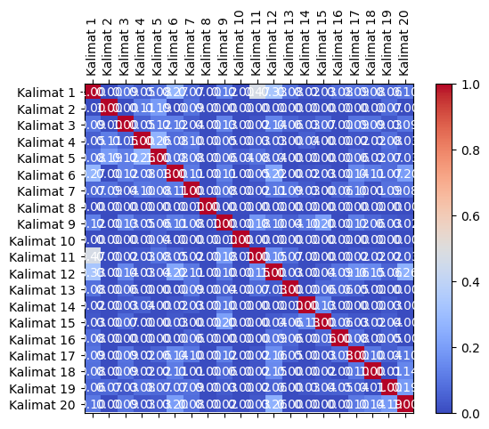
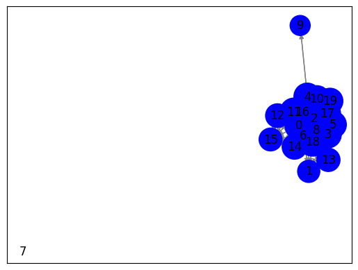

#Tugas Berita Online
#melakukan web scraping pada halaman berita yang berasal dari URL
import requests
from bs4 import BeautifulSoup
import nltk
# Unduh konten halaman web berita
url = "https://www.antaranews.com/berita/3799593/ari-lesmana-fourtwnty-ambil-bagian-di-film-budi-pekerti"
response = requests.get(url)
html = response.text
# Parsing halaman web menggunakan BeautifulSoup
soup = BeautifulSoup(html, 'html.parser')
# Ekstraksi teks dari elemen-elemen yang berisi berita
article = soup.find('div', class_="post-content clearfix") # Sesuaikan dengan struktur HTML halaman web berita
# Periksa apakah elemen article ada sebelum mencoba mengambil teksnya
if article is not None:
article_text = article.get_text()
# Tokenisasi teks menjadi kalimat menggunakan nltk
nltk.download('punkt') # Pastikan Anda sudah mengunduh tokenisasi kalimat nltk
sentences = nltk.sent_tokenize(article_text)
# Cetak kalimat-kalimat
for sentence in sentences:
print(sentence)
else:
print("Elemen berita tidak ditemukan")
Film menurutku salah satu hal yang menyenangkanJakarta (ANTARA) - Salah satu anggota dari grup Fourtwnty, Ari Lesmana, ambil bagian di film “Budi Pekerti” garapan sutradara Wregas Bhanuteja sebagai salah satu pemeran pendukung di dalamnya.
“Ditawarin, ini menarik.
Jadi mau,” kata Ari saat ditemui dalam acara penayangan perdana film “Budi Pekerti” di Plaza Senayan, Jakarta Pusat, Senin.
Alasan Ari bersedia memerankan karakter Tunas untuk film ini sederhana.
Ia sudah mengetahui karya-karya film Wregas sebelumnya, dan penggambaran karakter Tunas yang menarik membuatnya mau untuk bergabung dalam film ini.
Baca juga: Sutradara "Budi Pekerti" ungkap tawaran dari Brazil dan Mesir
Di film “Budi Pekerti”, Ari berperan sebagai Tunas, yakni tim redaksi dari media Gaung yang menjadi pemantik dari alur penceritaan di dalamnya.
Proyek film keduanya ini membuat Ari senang karena dapat mengeksplorasi lagi pengalamannya sebagai aktor dan juga musisi.
“Beda-beda.
Ada sesuatu yang nggak aku dapatkan di musik, atau sebaliknya di film, (keduanya) menyenangkan,” kata Ari.
Ia melanjutkan, “Selalu belajar, selalu belajar, selalu belajar.
Film menurutku salah satu hal yang menyenangkan,” katanya.
Baca juga: Film "Budi Pekerti" dapat respons positif audiens di festival Toronto
Menariknya, salah satu pemain di film “Budi Pekerti” Omara Esteghlal merupakan penggemar grup Fourtwnty.
Saat mereka harus berakting bersama, keduanya mengaku gugup karena rasa kagum satu sama lain.
“Aku justru paling deg-degan ketemu Bang Ari.
Tahun 2017, aku di depan sebuah minimarket aku minta foto sama dia,” kata Omar.
Bahkan, Omar ingin pergi ke konser Fourtwnty karena menyukai grup tersebut.
Sayangnya, rencana tersebut belum sempat terealisasikan dan akhirnya keduanya dipertemukan kembali di film “Budi Pekerti”.
Sementara itu, film “Budi Pekerti” akan tayang serentak di seluruh bioskop Indonesia mulai tanggal 2 November 2023.
Film ini dibintangi oleh deretan bintang Tanah Air, yakni Sha Ine Febriyanti, Angga Yunanda, Prilly Latuconsina, Dwi Sasono, Omar Esteghlal, Ari Lesmana, dan lainnya.
Baca juga: Sha Ine Febriyanti akui film "Budi Pekerti" cukup menantang
Baca juga: Prilly Latuconsina: Film "Budi Pekerti" kayak sekolah akting lagiPewarta: Vinny Shoffa SalmaEditor: Suryanto COPYRIGHT © ANTARA 2023
[nltk_data] Downloading package punkt to /root/nltk_data...
[nltk_data] Package punkt is already up-to-date!
#menghitung dan mencetak nilai TF-IDF (Term Frequency-Inverse Document Frequency)
#untuk setiap kata dalam setiap kalimat dari teks yang telah di-tokenisasi sebelumnya.
from sklearn.feature_extraction.text import TfidfVectorizer
# Inisialisasi penghitung TF-IDF
tfidf_vectorizer = TfidfVectorizer()
# Hitung TF-IDF
tfidf_matrix = tfidf_vectorizer.fit_transform(sentences)
# Daftar kata kunci
feature_names = tfidf_vectorizer.get_feature_names_out()
# Konversi matriks TF-IDF menjadi bentuk yang lebih mudah dibaca
tfidf_values = tfidf_matrix.toarray()
# Cetak TF-IDF untuk setiap kata dalam setiap kalimat
for i, sentence in enumerate(sentences):
print(f"Kalimat {i + 1}: {sentence}")
for j, word in enumerate(feature_names):
tfidf_value = tfidf_values[i][j]
if tfidf_value > 0:
print(f"{word}: {tfidf_value:.4f}")
print()
Kalimat 1:
Film menurutku salah satu hal yang menyenangkanJakarta (ANTARA) - Salah satu anggota dari grup Fourtwnty, Ari Lesmana, ambil bagian di film “Budi Pekerti” garapan sutradara Wregas Bhanuteja sebagai salah satu pemeran pendukung di dalamnya.
ambil: 0.1830
anggota: 0.1830
antara: 0.1609
ari: 0.1009
bagian: 0.1830
bhanuteja: 0.1830
budi: 0.1073
dalamnya: 0.1609
dari: 0.1609
di: 0.2018
film: 0.1535
fourtwnty: 0.1452
garapan: 0.1830
grup: 0.1452
hal: 0.1609
lesmana: 0.1609
menurutku: 0.1609
menyenangkanjakarta: 0.1830
pekerti: 0.1073
pemeran: 0.1830
pendukung: 0.1830
salah: 0.4356
satu: 0.3990
sebagai: 0.1452
sutradara: 0.1609
wregas: 0.1609
yang: 0.1230
Kalimat 2: “Ditawarin, ini menarik.
ditawarin: 0.6705
ini: 0.4507
menarik: 0.5894
Kalimat 3: Jadi mau,” kata Ari saat ditemui dalam acara penayangan perdana film “Budi Pekerti” di Plaza Senayan, Jakarta Pusat, Senin.
acara: 0.2634
ari: 0.1452
budi: 0.1544
dalam: 0.2315
di: 0.1452
ditemui: 0.2634
film: 0.1104
jadi: 0.2634
jakarta: 0.2634
kata: 0.2089
mau: 0.2315
pekerti: 0.1544
penayangan: 0.2634
perdana: 0.2634
plaza: 0.2634
pusat: 0.2634
saat: 0.2315
senayan: 0.2634
senin: 0.2634
Kalimat 4: Alasan Ari bersedia memerankan karakter Tunas untuk film ini sederhana.
alasan: 0.3751
ari: 0.2068
bersedia: 0.3751
film: 0.1573
ini: 0.2522
karakter: 0.3297
memerankan: 0.3751
sederhana: 0.3751
tunas: 0.2975
untuk: 0.3297
Kalimat 5: Ia sudah mengetahui karya-karya film Wregas sebelumnya, dan penggambaran karakter Tunas yang menarik membuatnya mau untuk bergabung dalam film ini.
bergabung: 0.2351
dalam: 0.2066
dan: 0.1580
film: 0.1972
ia: 0.2066
ini: 0.1580
karakter: 0.2066
karya: 0.4701
mau: 0.2066
membuatnya: 0.2351
menarik: 0.2066
mengetahui: 0.2351
penggambaran: 0.2351
sebelumnya: 0.2351
sudah: 0.2351
tunas: 0.1865
untuk: 0.2066
wregas: 0.2066
yang: 0.1580
Kalimat 6: Baca juga: Sutradara "Budi Pekerti" ungkap tawaran dari Brazil dan Mesir
Di film “Budi Pekerti”, Ari berperan sebagai Tunas, yakni tim redaksi dari media Gaung yang menjadi pemantik dari alur penceritaan di dalamnya.
alur: 0.1825
ari: 0.1006
baca: 0.1447
berperan: 0.1825
brazil: 0.1825
budi: 0.2140
dalamnya: 0.1604
dan: 0.1227
dari: 0.4812
di: 0.2011
film: 0.0765
gaung: 0.1825
juga: 0.1326
media: 0.1825
menjadi: 0.1825
mesir: 0.1825
pekerti: 0.2140
pemantik: 0.1825
penceritaan: 0.1825
redaksi: 0.1825
sebagai: 0.1447
sutradara: 0.1604
tawaran: 0.1825
tim: 0.1825
tunas: 0.1447
ungkap: 0.1825
yakni: 0.1604
yang: 0.1227
Kalimat 7: Proyek film keduanya ini membuat Ari senang karena dapat mengeksplorasi lagi pengalamannya sebagai aktor dan juga musisi.
aktor: 0.2832
ari: 0.1561
dan: 0.1904
dapat: 0.2489
film: 0.1188
ini: 0.1904
juga: 0.2058
karena: 0.2246
keduanya: 0.2058
lagi: 0.2832
membuat: 0.2832
mengeksplorasi: 0.2832
musisi: 0.2832
pengalamannya: 0.2832
proyek: 0.2832
sebagai: 0.2246
senang: 0.2832
Kalimat 8: “Beda-beda.
beda: 1.0000
Kalimat 9: Ada sesuatu yang nggak aku dapatkan di musik, atau sebaliknya di film, (keduanya) menyenangkan,” kata Ari.
ada: 0.2923
aku: 0.2318
ari: 0.1611
atau: 0.2923
dapatkan: 0.2923
di: 0.3222
film: 0.1226
kata: 0.2318
keduanya: 0.2124
menyenangkan: 0.2569
musik: 0.2923
nggak: 0.2923
sebaliknya: 0.2923
sesuatu: 0.2923
yang: 0.1965
Kalimat 10: Ia melanjutkan, “Selalu belajar, selalu belajar, selalu belajar.
belajar: 0.6747
ia: 0.1977
melanjutkan: 0.2249
selalu: 0.6747
Kalimat 11: Film menurutku salah satu hal yang menyenangkan,” katanya.
film: 0.1856
hal: 0.3891
katanya: 0.4427
menurutku: 0.3891
menyenangkan: 0.3891
salah: 0.3511
satu: 0.3217
yang: 0.2976
Kalimat 12: Baca juga: Film "Budi Pekerti" dapat respons positif audiens di festival Toronto
Menariknya, salah satu pemain di film “Budi Pekerti” Omara Esteghlal merupakan penggemar grup Fourtwnty.
audiens: 0.2248
baca: 0.1783
budi: 0.2636
dapat: 0.1976
di: 0.2478
esteghlal: 0.1976
festival: 0.2248
film: 0.1886
fourtwnty: 0.1783
grup: 0.1783
juga: 0.1633
menariknya: 0.2248
merupakan: 0.2248
omara: 0.2248
pekerti: 0.2636
pemain: 0.2248
penggemar: 0.2248
positif: 0.2248
respons: 0.2248
salah: 0.1783
satu: 0.1633
toronto: 0.2248
Kalimat 13: Saat mereka harus berakting bersama, keduanya mengaku gugup karena rasa kagum satu sama lain.
berakting: 0.2859
bersama: 0.2859
gugup: 0.2859
harus: 0.2859
kagum: 0.2859
karena: 0.2268
keduanya: 0.2078
lain: 0.2859
mengaku: 0.2859
mereka: 0.2859
rasa: 0.2859
saat: 0.2513
sama: 0.2513
satu: 0.2078
Kalimat 14: “Aku justru paling deg-degan ketemu Bang Ari.
aku: 0.3012
ari: 0.2093
bang: 0.3798
deg: 0.3798
degan: 0.3798
justru: 0.3798
ketemu: 0.3798
paling: 0.3798
Kalimat 15: Tahun 2017, aku di depan sebuah minimarket aku minta foto sama dia,” kata Omar.
2017: 0.2790
aku: 0.4425
depan: 0.2790
di: 0.1538
dia: 0.2790
foto: 0.2790
kata: 0.2213
minimarket: 0.2790
minta: 0.2790
omar: 0.2213
sama: 0.2452
sebuah: 0.2790
tahun: 0.2790
Kalimat 16: Bahkan, Omar ingin pergi ke konser Fourtwnty karena menyukai grup tersebut.
bahkan: 0.3281
fourtwnty: 0.2602
grup: 0.2602
ingin: 0.3281
karena: 0.2602
ke: 0.3281
konser: 0.3281
menyukai: 0.3281
omar: 0.2602
pergi: 0.3281
tersebut: 0.2884
Kalimat 17: Sayangnya, rencana tersebut belum sempat terealisasikan dan akhirnya keduanya dipertemukan kembali di film “Budi Pekerti”.
akhirnya: 0.3026
belum: 0.3026
budi: 0.1774
dan: 0.2034
di: 0.1668
dipertemukan: 0.3026
film: 0.1269
keduanya: 0.2199
kembali: 0.3026
pekerti: 0.1774
rencana: 0.3026
sayangnya: 0.3026
sempat: 0.3026
terealisasikan: 0.3026
tersebut: 0.2660
Kalimat 18: Sementara itu, film “Budi Pekerti” akan tayang serentak di seluruh bioskop Indonesia mulai tanggal 2 November 2023.
2023: 0.2444
akan: 0.2780
bioskop: 0.2780
budi: 0.1630
di: 0.1532
film: 0.1166
indonesia: 0.2780
itu: 0.2780
mulai: 0.2780
november: 0.2780
pekerti: 0.1630
seluruh: 0.2780
sementara: 0.2780
serentak: 0.2780
tanggal: 0.2780
tayang: 0.2780
Kalimat 19: Film ini dibintangi oleh deretan bintang Tanah Air, yakni Sha Ine Febriyanti, Angga Yunanda, Prilly Latuconsina, Dwi Sasono, Omar Esteghlal, Ari Lesmana, dan lainnya.
air: 0.2283
angga: 0.2283
ari: 0.1258
bintang: 0.2283
dan: 0.1534
deretan: 0.2283
dibintangi: 0.2283
dwi: 0.2283
esteghlal: 0.2006
febriyanti: 0.2006
film: 0.0957
ine: 0.2006
ini: 0.1534
lainnya: 0.2283
latuconsina: 0.2006
lesmana: 0.2006
oleh: 0.2283
omar: 0.1810
prilly: 0.2006
sasono: 0.2283
sha: 0.2006
tanah: 0.2283
yakni: 0.2006
yunanda: 0.2283
Kalimat 20: Baca juga: Sha Ine Febriyanti akui film "Budi Pekerti" cukup menantang
Baca juga: Prilly Latuconsina: Film "Budi Pekerti" kayak sekolah akting lagiPewarta: Vinny Shoffa SalmaEditor: Suryanto COPYRIGHT © ANTARA 2023
2023: 0.1741
akting: 0.1981
akui: 0.1981
antara: 0.1741
baca: 0.3142
budi: 0.2323
copyright: 0.1981
cukup: 0.1981
febriyanti: 0.1741
film: 0.1661
ine: 0.1741
juga: 0.2878
kayak: 0.1981
lagipewarta: 0.1981
latuconsina: 0.1741
menantang: 0.1981
pekerti: 0.2323
prilly: 0.1741
salmaeditor: 0.1981
sekolah: 0.1981
sha: 0.1741
shoffa: 0.1981
suryanto: 0.1981
vinny: 0.1981
#menghitung kemiripan kosinus (cosine similarity) antara dua kalimat berdasarkan vektor representasi TF-IDF dari masing-masing kalimat.
from sklearn.metrics.pairwise import cosine_similarity
from sklearn.feature_extraction.text import TfidfVectorizer
# Indeks kalimat yang akan dibandingkan
sentence1_index = 0 # Ganti dengan indeks kalimat pertama yang ingin Anda bandingkan
sentence2_index = 1 # Ganti dengan indeks kalimat kedua yang ingin Anda bandingkan
# Ambil vektor TF-IDF untuk kedua kalimat
tfidf_vector1 = tfidf_matrix[sentence1_index]
tfidf_vector2 = tfidf_matrix[sentence2_index]
# Hitung cosine similarity antara kedua vektor
similarity = cosine_similarity(tfidf_vector1, tfidf_vector2)
# Cetak hasil cosine similarity
print(f"Cosine Similarity antara Kalimat {sentence1_index + 1} dan Kalimat {sentence2_index + 1}: {similarity[0][0]:.4f}")
Cosine Similarity antara Kalimat 1 dan Kalimat 2: 0.0000
#menghitung dan mencetak kemiripan kosinus (cosine similarity) antara semua pasangan kalimat dalam teks yang telah di-tokenisasi
# Matriks TF-IDF telah dihitung sebelumnya (tfidf_matrix)
# Hitung cosine similarity antara semua pasangan kalimat
similarity_matrix = cosine_similarity(tfidf_matrix, tfidf_matrix)
# Cetak hasil similarity_matrix
num_sentences = len(sentences) # Jumlah kalimat
for i in range(num_sentences):
for j in range(i+1, num_sentences):
similarity = similarity_matrix[i][j]
print(f"Cosine Similarity antara Kalimat {i + 1} dan Kalimat {j + 1}: {similarity:.4f}")
Cosine Similarity antara Kalimat 1 dan Kalimat 2: 0.0000
Cosine Similarity antara Kalimat 1 dan Kalimat 3: 0.0940
Cosine Similarity antara Kalimat 1 dan Kalimat 4: 0.0450
Cosine Similarity antara Kalimat 1 dan Kalimat 5: 0.0830
Cosine Similarity antara Kalimat 1 dan Kalimat 6: 0.2736
Cosine Similarity antara Kalimat 1 dan Kalimat 7: 0.0666
Cosine Similarity antara Kalimat 1 dan Kalimat 8: 0.0000
Cosine Similarity antara Kalimat 1 dan Kalimat 9: 0.1243
Cosine Similarity antara Kalimat 1 dan Kalimat 10: 0.0000
Cosine Similarity antara Kalimat 1 dan Kalimat 11: 0.4716
Cosine Similarity antara Kalimat 1 dan Kalimat 12: 0.3302
Cosine Similarity antara Kalimat 1 dan Kalimat 13: 0.0829
Cosine Similarity antara Kalimat 1 dan Kalimat 14: 0.0211
Cosine Similarity antara Kalimat 1 dan Kalimat 15: 0.0310
Cosine Similarity antara Kalimat 1 dan Kalimat 16: 0.0756
Cosine Similarity antara Kalimat 1 dan Kalimat 17: 0.0912
Cosine Similarity antara Kalimat 1 dan Kalimat 18: 0.0838
Cosine Similarity antara Kalimat 1 dan Kalimat 19: 0.0597
Cosine Similarity antara Kalimat 1 dan Kalimat 20: 0.1034
Cosine Similarity antara Kalimat 2 dan Kalimat 3: 0.0000
Cosine Similarity antara Kalimat 2 dan Kalimat 4: 0.1136
Cosine Similarity antara Kalimat 2 dan Kalimat 5: 0.1930
Cosine Similarity antara Kalimat 2 dan Kalimat 6: 0.0000
Cosine Similarity antara Kalimat 2 dan Kalimat 7: 0.0858
Cosine Similarity antara Kalimat 2 dan Kalimat 8: 0.0000
Cosine Similarity antara Kalimat 2 dan Kalimat 9: 0.0000
Cosine Similarity antara Kalimat 2 dan Kalimat 10: 0.0000
Cosine Similarity antara Kalimat 2 dan Kalimat 11: 0.0000
Cosine Similarity antara Kalimat 2 dan Kalimat 12: 0.0000
Cosine Similarity antara Kalimat 2 dan Kalimat 13: 0.0000
Cosine Similarity antara Kalimat 2 dan Kalimat 14: 0.0000
Cosine Similarity antara Kalimat 2 dan Kalimat 15: 0.0000
Cosine Similarity antara Kalimat 2 dan Kalimat 16: 0.0000
Cosine Similarity antara Kalimat 2 dan Kalimat 17: 0.0000
Cosine Similarity antara Kalimat 2 dan Kalimat 18: 0.0000
Cosine Similarity antara Kalimat 2 dan Kalimat 19: 0.0691
Cosine Similarity antara Kalimat 2 dan Kalimat 20: 0.0000
Cosine Similarity antara Kalimat 3 dan Kalimat 4: 0.0474
Cosine Similarity antara Kalimat 3 dan Kalimat 5: 0.1174
Cosine Similarity antara Kalimat 3 dan Kalimat 6: 0.1183
Cosine Similarity antara Kalimat 3 dan Kalimat 7: 0.0358
Cosine Similarity antara Kalimat 3 dan Kalimat 8: 0.0000
Cosine Similarity antara Kalimat 3 dan Kalimat 9: 0.1321
Cosine Similarity antara Kalimat 3 dan Kalimat 10: 0.0000
Cosine Similarity antara Kalimat 3 dan Kalimat 11: 0.0205
Cosine Similarity antara Kalimat 3 dan Kalimat 12: 0.1382
Cosine Similarity antara Kalimat 3 dan Kalimat 13: 0.0582
Cosine Similarity antara Kalimat 3 dan Kalimat 14: 0.0304
Cosine Similarity antara Kalimat 3 dan Kalimat 15: 0.0685
Cosine Similarity antara Kalimat 3 dan Kalimat 16: 0.0000
Cosine Similarity antara Kalimat 3 dan Kalimat 17: 0.0930
Cosine Similarity antara Kalimat 3 dan Kalimat 18: 0.0855
Cosine Similarity antara Kalimat 3 dan Kalimat 19: 0.0288
Cosine Similarity antara Kalimat 3 dan Kalimat 20: 0.0901
Cosine Similarity antara Kalimat 4 dan Kalimat 5: 0.2626
Cosine Similarity antara Kalimat 4 dan Kalimat 6: 0.0759
Cosine Similarity antara Kalimat 4 dan Kalimat 7: 0.0990
Cosine Similarity antara Kalimat 4 dan Kalimat 8: 0.0000
Cosine Similarity antara Kalimat 4 dan Kalimat 9: 0.0526
Cosine Similarity antara Kalimat 4 dan Kalimat 10: 0.0000
Cosine Similarity antara Kalimat 4 dan Kalimat 11: 0.0292
Cosine Similarity antara Kalimat 4 dan Kalimat 12: 0.0297
Cosine Similarity antara Kalimat 4 dan Kalimat 13: 0.0000
Cosine Similarity antara Kalimat 4 dan Kalimat 14: 0.0433
Cosine Similarity antara Kalimat 4 dan Kalimat 15: 0.0000
Cosine Similarity antara Kalimat 4 dan Kalimat 16: 0.0000
Cosine Similarity antara Kalimat 4 dan Kalimat 17: 0.0200
Cosine Similarity antara Kalimat 4 dan Kalimat 18: 0.0183
Cosine Similarity antara Kalimat 4 dan Kalimat 19: 0.0798
Cosine Similarity antara Kalimat 4 dan Kalimat 20: 0.0261
Cosine Similarity antara Kalimat 5 dan Kalimat 6: 0.0808
Cosine Similarity antara Kalimat 5 dan Kalimat 7: 0.0836
Cosine Similarity antara Kalimat 5 dan Kalimat 8: 0.0000
Cosine Similarity antara Kalimat 5 dan Kalimat 9: 0.0552
Cosine Similarity antara Kalimat 5 dan Kalimat 10: 0.0408
Cosine Similarity antara Kalimat 5 dan Kalimat 11: 0.0836
Cosine Similarity antara Kalimat 5 dan Kalimat 12: 0.0372
Cosine Similarity antara Kalimat 5 dan Kalimat 13: 0.0000
Cosine Similarity antara Kalimat 5 dan Kalimat 14: 0.0000
Cosine Similarity antara Kalimat 5 dan Kalimat 15: 0.0000
Cosine Similarity antara Kalimat 5 dan Kalimat 16: 0.0000
Cosine Similarity antara Kalimat 5 dan Kalimat 17: 0.0572
Cosine Similarity antara Kalimat 5 dan Kalimat 18: 0.0230
Cosine Similarity antara Kalimat 5 dan Kalimat 19: 0.0674
Cosine Similarity antara Kalimat 5 dan Kalimat 20: 0.0328
Cosine Similarity antara Kalimat 6 dan Kalimat 7: 0.1079
Cosine Similarity antara Kalimat 6 dan Kalimat 8: 0.0000
Cosine Similarity antara Kalimat 6 dan Kalimat 9: 0.1145
Cosine Similarity antara Kalimat 6 dan Kalimat 10: 0.0000
Cosine Similarity antara Kalimat 6 dan Kalimat 11: 0.0507
Cosine Similarity antara Kalimat 6 dan Kalimat 12: 0.2246
Cosine Similarity antara Kalimat 6 dan Kalimat 13: 0.0000
Cosine Similarity antara Kalimat 6 dan Kalimat 14: 0.0211
Cosine Similarity antara Kalimat 6 dan Kalimat 15: 0.0309
Cosine Similarity antara Kalimat 6 dan Kalimat 16: 0.0000
Cosine Similarity antara Kalimat 6 dan Kalimat 17: 0.1441
Cosine Similarity antara Kalimat 6 dan Kalimat 18: 0.1095
Cosine Similarity antara Kalimat 6 dan Kalimat 19: 0.0710
Cosine Similarity antara Kalimat 6 dan Kalimat 20: 0.1957
Cosine Similarity antara Kalimat 7 dan Kalimat 8: 0.0000
Cosine Similarity antara Kalimat 7 dan Kalimat 9: 0.0834
Cosine Similarity antara Kalimat 7 dan Kalimat 10: 0.0000
Cosine Similarity antara Kalimat 7 dan Kalimat 11: 0.0220
Cosine Similarity antara Kalimat 7 dan Kalimat 12: 0.1052
Cosine Similarity antara Kalimat 7 dan Kalimat 13: 0.0937
Cosine Similarity antara Kalimat 7 dan Kalimat 14: 0.0327
Cosine Similarity antara Kalimat 7 dan Kalimat 15: 0.0000
Cosine Similarity antara Kalimat 7 dan Kalimat 16: 0.0585
Cosine Similarity antara Kalimat 7 dan Kalimat 17: 0.0990
Cosine Similarity antara Kalimat 7 dan Kalimat 18: 0.0138
Cosine Similarity antara Kalimat 7 dan Kalimat 19: 0.0894
Cosine Similarity antara Kalimat 7 dan Kalimat 20: 0.0790
Cosine Similarity antara Kalimat 8 dan Kalimat 9: 0.0000
Cosine Similarity antara Kalimat 8 dan Kalimat 10: 0.0000
Cosine Similarity antara Kalimat 8 dan Kalimat 11: 0.0000
Cosine Similarity antara Kalimat 8 dan Kalimat 12: 0.0000
Cosine Similarity antara Kalimat 8 dan Kalimat 13: 0.0000
Cosine Similarity antara Kalimat 8 dan Kalimat 14: 0.0000
Cosine Similarity antara Kalimat 8 dan Kalimat 15: 0.0000
Cosine Similarity antara Kalimat 8 dan Kalimat 16: 0.0000
Cosine Similarity antara Kalimat 8 dan Kalimat 17: 0.0000
Cosine Similarity antara Kalimat 8 dan Kalimat 18: 0.0000
Cosine Similarity antara Kalimat 8 dan Kalimat 19: 0.0000
Cosine Similarity antara Kalimat 8 dan Kalimat 20: 0.0000
Cosine Similarity antara Kalimat 9 dan Kalimat 10: 0.0000
Cosine Similarity antara Kalimat 9 dan Kalimat 11: 0.1812
Cosine Similarity antara Kalimat 9 dan Kalimat 12: 0.1030
Cosine Similarity antara Kalimat 9 dan Kalimat 13: 0.0441
Cosine Similarity antara Kalimat 9 dan Kalimat 14: 0.1036
Cosine Similarity antara Kalimat 9 dan Kalimat 15: 0.2034
Cosine Similarity antara Kalimat 9 dan Kalimat 16: 0.0000
Cosine Similarity antara Kalimat 9 dan Kalimat 17: 0.1160
Cosine Similarity antara Kalimat 9 dan Kalimat 18: 0.0637
Cosine Similarity antara Kalimat 9 dan Kalimat 19: 0.0320
Cosine Similarity antara Kalimat 9 dan Kalimat 20: 0.0204
Cosine Similarity antara Kalimat 10 dan Kalimat 11: 0.0000
Cosine Similarity antara Kalimat 10 dan Kalimat 12: 0.0000
Cosine Similarity antara Kalimat 10 dan Kalimat 13: 0.0000
Cosine Similarity antara Kalimat 10 dan Kalimat 14: 0.0000
Cosine Similarity antara Kalimat 10 dan Kalimat 15: 0.0000
Cosine Similarity antara Kalimat 10 dan Kalimat 16: 0.0000
Cosine Similarity antara Kalimat 10 dan Kalimat 17: 0.0000
Cosine Similarity antara Kalimat 10 dan Kalimat 18: 0.0000
Cosine Similarity antara Kalimat 10 dan Kalimat 19: 0.0000
Cosine Similarity antara Kalimat 10 dan Kalimat 20: 0.0000
Cosine Similarity antara Kalimat 11 dan Kalimat 12: 0.1502
Cosine Similarity antara Kalimat 11 dan Kalimat 13: 0.0668
Cosine Similarity antara Kalimat 11 dan Kalimat 14: 0.0000
Cosine Similarity antara Kalimat 11 dan Kalimat 15: 0.0000
Cosine Similarity antara Kalimat 11 dan Kalimat 16: 0.0000
Cosine Similarity antara Kalimat 11 dan Kalimat 17: 0.0236
Cosine Similarity antara Kalimat 11 dan Kalimat 18: 0.0216
Cosine Similarity antara Kalimat 11 dan Kalimat 19: 0.0178
Cosine Similarity antara Kalimat 11 dan Kalimat 20: 0.0308
Cosine Similarity antara Kalimat 12 dan Kalimat 13: 0.0339
Cosine Similarity antara Kalimat 12 dan Kalimat 14: 0.0000
Cosine Similarity antara Kalimat 12 dan Kalimat 15: 0.0381
Cosine Similarity antara Kalimat 12 dan Kalimat 16: 0.0928
Cosine Similarity antara Kalimat 12 dan Kalimat 17: 0.1588
Cosine Similarity antara Kalimat 12 dan Kalimat 18: 0.1459
Cosine Similarity antara Kalimat 12 dan Kalimat 19: 0.0577
Cosine Similarity antara Kalimat 12 dan Kalimat 20: 0.2568
Cosine Similarity antara Kalimat 13 dan Kalimat 14: 0.0000
Cosine Similarity antara Kalimat 13 dan Kalimat 15: 0.0616
Cosine Similarity antara Kalimat 13 dan Kalimat 16: 0.0590
Cosine Similarity antara Kalimat 13 dan Kalimat 17: 0.0457
Cosine Similarity antara Kalimat 13 dan Kalimat 18: 0.0000
Cosine Similarity antara Kalimat 13 dan Kalimat 19: 0.0000
Cosine Similarity antara Kalimat 13 dan Kalimat 20: 0.0000
Cosine Similarity antara Kalimat 14 dan Kalimat 15: 0.1333
Cosine Similarity antara Kalimat 14 dan Kalimat 16: 0.0000
Cosine Similarity antara Kalimat 14 dan Kalimat 17: 0.0000
Cosine Similarity antara Kalimat 14 dan Kalimat 18: 0.0000
Cosine Similarity antara Kalimat 14 dan Kalimat 19: 0.0263
Cosine Similarity antara Kalimat 14 dan Kalimat 20: 0.0000
Cosine Similarity antara Kalimat 15 dan Kalimat 16: 0.0576
Cosine Similarity antara Kalimat 15 dan Kalimat 17: 0.0256
Cosine Similarity antara Kalimat 15 dan Kalimat 18: 0.0236
Cosine Similarity antara Kalimat 15 dan Kalimat 19: 0.0401
Cosine Similarity antara Kalimat 15 dan Kalimat 20: 0.0000
Cosine Similarity antara Kalimat 16 dan Kalimat 17: 0.0767
Cosine Similarity antara Kalimat 16 dan Kalimat 18: 0.0000
Cosine Similarity antara Kalimat 16 dan Kalimat 19: 0.0471
Cosine Similarity antara Kalimat 16 dan Kalimat 20: 0.0000
Cosine Similarity antara Kalimat 17 dan Kalimat 18: 0.0982
Cosine Similarity antara Kalimat 17 dan Kalimat 19: 0.0434
Cosine Similarity antara Kalimat 17 dan Kalimat 20: 0.1035
Cosine Similarity antara Kalimat 18 dan Kalimat 19: 0.0112
Cosine Similarity antara Kalimat 18 dan Kalimat 20: 0.1376
Cosine Similarity antara Kalimat 19 dan Kalimat 20: 0.1906
#membuat dan mencetak DataFrame menggunakan hasil perhitungan cosine similarity antara semua pasangan kalimat dalam teks yang telah di-tokenisasi dan matriks TF-IDF
import pandas as pd
# Matriks TF-IDF telah dihitung sebelumnya (tfidf_matrix)
# Hitung cosine similarity antara semua pasangan kalimat
similarity_matrix = cosine_similarity(tfidf_matrix, tfidf_matrix)
# Nama kolom dan indeks untuk DataFrame
sentence_indices = [f"Kalimat {i + 1}" for i in range(len(sentences))]
# Buat DataFrame dari hasil cosine similarity
df = pd.DataFrame(similarity_matrix, columns=sentence_indices, index=sentence_indices)
# Cetak DataFrame
df
| Kalimat 1 | Kalimat 2 | Kalimat 3 | Kalimat 4 | Kalimat 5 | Kalimat 6 | Kalimat 7 | Kalimat 8 | Kalimat 9 | Kalimat 10 | Kalimat 11 | Kalimat 12 | Kalimat 13 | Kalimat 14 | Kalimat 15 | Kalimat 16 | Kalimat 17 | Kalimat 18 | Kalimat 19 | Kalimat 20 | |
|---|---|---|---|---|---|---|---|---|---|---|---|---|---|---|---|---|---|---|---|---|
| Kalimat 1 | 1.000000 | 0.000000 | 0.094045 | 0.045017 | 0.082961 | 0.273558 | 0.066594 | 0.0 | 0.124270 | 0.000000 | 0.471625 | 0.330173 | 0.082900 | 0.021122 | 0.031028 | 0.075570 | 0.091234 | 0.083811 | 0.059674 | 0.103379 |
| Kalimat 2 | 0.000000 | 1.000000 | 0.000000 | 0.113646 | 0.192994 | 0.000000 | 0.085789 | 0.0 | 0.000000 | 0.000000 | 0.000000 | 0.000000 | 0.000000 | 0.000000 | 0.000000 | 0.000000 | 0.000000 | 0.000000 | 0.069149 | 0.000000 |
| Kalimat 3 | 0.094045 | 0.000000 | 1.000000 | 0.047391 | 0.117443 | 0.118334 | 0.035775 | 0.0 | 0.132125 | 0.000000 | 0.020504 | 0.138220 | 0.058186 | 0.030389 | 0.068538 | 0.000000 | 0.093030 | 0.085460 | 0.028836 | 0.090082 |
| Kalimat 4 | 0.045017 | 0.113646 | 0.047391 | 1.000000 | 0.262614 | 0.075897 | 0.098958 | 0.0 | 0.052597 | 0.000000 | 0.029206 | 0.029663 | 0.000000 | 0.043287 | 0.000000 | 0.000000 | 0.019965 | 0.018341 | 0.079764 | 0.026135 |
| Kalimat 5 | 0.082961 | 0.192994 | 0.117443 | 0.262614 | 1.000000 | 0.080832 | 0.083570 | 0.0 | 0.055212 | 0.040847 | 0.083623 | 0.037176 | 0.000000 | 0.000000 | 0.000000 | 0.000000 | 0.057164 | 0.022986 | 0.067361 | 0.032754 |
| Kalimat 6 | 0.273558 | 0.000000 | 0.118334 | 0.075897 | 0.080832 | 1.000000 | 0.107918 | 0.0 | 0.114493 | 0.000000 | 0.050703 | 0.224562 | 0.000000 | 0.021054 | 0.030929 | 0.000000 | 0.144148 | 0.109499 | 0.070977 | 0.195744 |
| Kalimat 7 | 0.066594 | 0.085789 | 0.035775 | 0.098958 | 0.083570 | 0.107918 | 1.000000 | 0.0 | 0.083400 | 0.000000 | 0.022047 | 0.105190 | 0.093692 | 0.032676 | 0.000000 | 0.058454 | 0.099034 | 0.013845 | 0.089418 | 0.078951 |
| Kalimat 8 | 0.000000 | 0.000000 | 0.000000 | 0.000000 | 0.000000 | 0.000000 | 0.000000 | 1.0 | 0.000000 | 0.000000 | 0.000000 | 0.000000 | 0.000000 | 0.000000 | 0.000000 | 0.000000 | 0.000000 | 0.000000 | 0.000000 | 0.000000 |
| Kalimat 9 | 0.124270 | 0.000000 | 0.132125 | 0.052597 | 0.055212 | 0.114493 | 0.083400 | 0.0 | 1.000000 | 0.000000 | 0.181194 | 0.102966 | 0.044123 | 0.103563 | 0.203425 | 0.000000 | 0.115998 | 0.063663 | 0.032003 | 0.020363 |
| Kalimat 10 | 0.000000 | 0.000000 | 0.000000 | 0.000000 | 0.040847 | 0.000000 | 0.000000 | 0.0 | 0.000000 | 1.000000 | 0.000000 | 0.000000 | 0.000000 | 0.000000 | 0.000000 | 0.000000 | 0.000000 | 0.000000 | 0.000000 | 0.000000 |
| Kalimat 11 | 0.471625 | 0.000000 | 0.020504 | 0.029206 | 0.083623 | 0.050703 | 0.022047 | 0.0 | 0.181194 | 0.000000 | 1.000000 | 0.150155 | 0.066828 | 0.000000 | 0.000000 | 0.000000 | 0.023560 | 0.021643 | 0.017771 | 0.030841 |
| Kalimat 12 | 0.330173 | 0.000000 | 0.138220 | 0.029663 | 0.037176 | 0.224562 | 0.105190 | 0.0 | 0.102966 | 0.000000 | 0.150155 | 1.000000 | 0.033937 | 0.000000 | 0.038106 | 0.092809 | 0.158826 | 0.145902 | 0.057697 | 0.256832 |
| Kalimat 13 | 0.082900 | 0.000000 | 0.058186 | 0.000000 | 0.000000 | 0.000000 | 0.093692 | 0.0 | 0.044123 | 0.000000 | 0.066828 | 0.033937 | 1.000000 | 0.000000 | 0.061631 | 0.059024 | 0.045683 | 0.000000 | 0.000000 | 0.000000 |
| Kalimat 14 | 0.021122 | 0.000000 | 0.030389 | 0.043287 | 0.000000 | 0.021054 | 0.032676 | 0.0 | 0.103563 | 0.000000 | 0.000000 | 0.000000 | 0.000000 | 1.000000 | 0.133302 | 0.000000 | 0.000000 | 0.000000 | 0.026338 | 0.000000 |
| Kalimat 15 | 0.031028 | 0.000000 | 0.068538 | 0.000000 | 0.000000 | 0.030929 | 0.000000 | 0.0 | 0.203425 | 0.000000 | 0.000000 | 0.038106 | 0.061631 | 0.133302 | 1.000000 | 0.057581 | 0.025648 | 0.023561 | 0.040058 | 0.000000 |
| Kalimat 16 | 0.075570 | 0.000000 | 0.000000 | 0.000000 | 0.000000 | 0.000000 | 0.058454 | 0.0 | 0.000000 | 0.000000 | 0.000000 | 0.092809 | 0.059024 | 0.000000 | 0.057581 | 1.000000 | 0.076718 | 0.000000 | 0.047116 | 0.000000 |
| Kalimat 17 | 0.091234 | 0.000000 | 0.093030 | 0.019965 | 0.057164 | 0.144148 | 0.099034 | 0.0 | 0.115998 | 0.000000 | 0.023560 | 0.158826 | 0.045683 | 0.000000 | 0.025648 | 0.076718 | 1.000000 | 0.098201 | 0.043358 | 0.103511 |
| Kalimat 18 | 0.083811 | 0.000000 | 0.085460 | 0.018341 | 0.022986 | 0.109499 | 0.013845 | 0.0 | 0.063663 | 0.000000 | 0.021643 | 0.145902 | 0.000000 | 0.000000 | 0.023561 | 0.000000 | 0.098201 | 1.000000 | 0.011160 | 0.137632 |
| Kalimat 19 | 0.059674 | 0.069149 | 0.028836 | 0.079764 | 0.067361 | 0.070977 | 0.089418 | 0.0 | 0.032003 | 0.000000 | 0.017771 | 0.057697 | 0.000000 | 0.026338 | 0.040058 | 0.047116 | 0.043358 | 0.011160 | 1.000000 | 0.190560 |
| Kalimat 20 | 0.103379 | 0.000000 | 0.090082 | 0.026135 | 0.032754 | 0.195744 | 0.078951 | 0.0 | 0.020363 | 0.000000 | 0.030841 | 0.256832 | 0.000000 | 0.000000 | 0.000000 | 0.000000 | 0.103511 | 0.137632 | 0.190560 | 1.000000 |
#membuat dan menampilkan grafik matriks yang menggambarkan cosine similarity antara semua pasangan kalimat dalam teks yang telah di-tokenisasi
import pandas as pd
import numpy as np
import matplotlib.pyplot as plt
# Matriks TF-IDF telah dihitung sebelumnya (tfidf_matrix)
# Hitung cosine similarity antara semua pasangan kalimat
similarity_matrix = cosine_similarity(tfidf_matrix, tfidf_matrix)
# Nama kolom dan indeks untuk DataFrame
sentence_indices = [f"Kalimat {i + 1}" for i in range(len(sentences))]
# Buat DataFrame dari hasil cosine similarity
df = pd.DataFrame(similarity_matrix, columns=sentence_indices, index=sentence_indices)
# Membuat grafik matriks
fig, ax = plt.subplots()
cax = ax.matshow(df, cmap='coolwarm')
fig.colorbar(cax)
# Memberi label pada sumbu X dan Y
ax.set_xticks(np.arange(len(df.columns)))
ax.set_yticks(np.arange(len(df.index)))
ax.set_xticklabels(df.columns, rotation=90)
ax.set_yticklabels(df.index)
# Menampilkan nilai similarity pada matriks
for i in range(len(df.index)):
for j in range(len(df.columns)):
text = ax.text(j, i, f'{df.iat[i, j]:.2f}', ha='center', va='center', color='w')
plt.show()

#membangun sebuah graf yang merepresentasikan hubungan antara kalimat dalam teks berdasarkan kemiripan (similarity) antara kalimat-kalimat tersebut.
import networkx as nx
# Buat grafik dari matriks similarity
G = nx.Graph()
# Tambahkan simpul (node) ke grafik yang mewakili setiap kalimat
for sentence in sentences:
G.add_node(sentence)
# Tambahkan tepi (edge) antara kalimat berdasarkan similarity
for i in range(len(sentences)):
for j in range(i + 1, len(sentences)):
similarity = df.iloc[i, j] # Mengambil similarity dari DataFrame
if similarity > 0:
G.add_edge(sentences[i], sentences[j], weight=similarity)
# Hitung closeness centrality untuk setiap simpul
closeness_centrality = nx.closeness_centrality(G, distance='weight')
# Cetak closeness centrality
for sentence, centrality in closeness_centrality.items():
print(f"Closeness Centrality of {sentence}: {centrality:.4f}")
Closeness Centrality of
Film menurutku salah satu hal yang menyenangkanJakarta (ANTARA) - Salah satu anggota dari grup Fourtwnty, Ari Lesmana, ambil bagian di film “Budi Pekerti” garapan sutradara Wregas Bhanuteja sebagai salah satu pemeran pendukung di dalamnya.: 14.7077
Closeness Centrality of “Ditawarin, ini menarik.: 8.8977
Closeness Centrality of Jadi mau,” kata Ari saat ditemui dalam acara penayangan perdana film “Budi Pekerti” di Plaza Senayan, Jakarta Pusat, Senin.: 17.0248
Closeness Centrality of Alasan Ari bersedia memerankan karakter Tunas untuk film ini sederhana.: 20.4028
Closeness Centrality of Ia sudah mengetahui karya-karya film Wregas sebelumnya, dan penggambaran karakter Tunas yang menarik membuatnya mau untuk bergabung dalam film ini.: 17.3705
Closeness Centrality of Baca juga: Sutradara "Budi Pekerti" ungkap tawaran dari Brazil dan Mesir
Di film “Budi Pekerti”, Ari berperan sebagai Tunas, yakni tim redaksi dari media Gaung yang menjadi pemantik dari alur penceritaan di dalamnya.: 14.2555
Closeness Centrality of Proyek film keduanya ini membuat Ari senang karena dapat mengeksplorasi lagi pengalamannya sebagai aktor dan juga musisi.: 19.5682
Closeness Centrality of “Beda-beda.: 0.0000
Closeness Centrality of Ada sesuatu yang nggak aku dapatkan di musik, atau sebaliknya di film, (keduanya) menyenangkan,” kata Ari.: 15.3951
Closeness Centrality of Ia melanjutkan, “Selalu belajar, selalu belajar, selalu belajar.: 10.1740
Closeness Centrality of Film menurutku salah satu hal yang menyenangkan,” katanya.: 20.5899
Closeness Centrality of Baca juga: Film "Budi Pekerti" dapat respons positif audiens di festival Toronto
Menariknya, salah satu pemain di film “Budi Pekerti” Omara Esteghlal merupakan penggemar grup Fourtwnty.: 15.0543
Closeness Centrality of Saat mereka harus berakting bersama, keduanya mengaku gugup karena rasa kagum satu sama lain.: 12.7561
Closeness Centrality of “Aku justru paling deg-degan ketemu Bang Ari.: 17.1945
Closeness Centrality of Tahun 2017, aku di depan sebuah minimarket aku minta foto sama dia,” kata Omar.: 18.6200
Closeness Centrality of Bahkan, Omar ingin pergi ke konser Fourtwnty karena menyukai grup tersebut.: 12.1853
Closeness Centrality of Sayangnya, rencana tersebut belum sempat terealisasikan dan akhirnya keduanya dipertemukan kembali di film “Budi Pekerti”.: 17.6668
Closeness Centrality of Sementara itu, film “Budi Pekerti” akan tayang serentak di seluruh bioskop Indonesia mulai tanggal 2 November 2023.: 22.5441
Closeness Centrality of Film ini dibintangi oleh deretan bintang Tanah Air, yakni Sha Ine Febriyanti, Angga Yunanda, Prilly Latuconsina, Dwi Sasono, Omar Esteghlal, Ari Lesmana, dan lainnya.: 22.7564
Closeness Centrality of Baca juga: Sha Ine Febriyanti akui film "Budi Pekerti" cukup menantang
Baca juga: Prilly Latuconsina: Film "Budi Pekerti" kayak sekolah akting lagiPewarta: Vinny Shoffa SalmaEditor: Suryanto COPYRIGHT © ANTARA 2023: 16.2245
#membuat grafik berarah (Directed Graph - DiGraph) yang merepresentasikan hubungan antara kalimat-kalimat dalam teks berdasarkan kemiripan (cosine similarity)
import networkx as nx
# Matriks TF-IDF telah dihitung sebelumnya (tfidf_matrix)
# Hitung cosine similarity antara semua pasangan kalimat
similarity_matrix = cosine_similarity(tfidf_matrix, tfidf_matrix)
# Buat grafik berarah (DiGraph) berdasarkan similarity_matrix
G = nx.DiGraph()
for i in range(len(similarity_matrix)):
G.add_node(i) # Tambahkan node dengan indeks numerik
for i in range(len(similarity_matrix)):
for j in range(len(similarity_matrix)):
similarity = similarity_matrix[i][j]
if similarity > 0 and i != j: # Pastikan node tidak menghubungkan dirinya sendiri
G.add_edge(i, j)
# Hitung closeness centrality
closeness_centrality = nx.closeness_centrality(G)
# Visualisasi closeness centrality
pos = nx.spring_layout(G) # Atur layout grafik
node_size = [v * 1000 for v in closeness_centrality.values()] # Ubah ukuran node berdasarkan closeness centrality, dengan faktor pengurangan ukuran
nx.draw_networkx_nodes(G, pos, node_size=node_size, node_color='b')
nx.draw_networkx_edges(G, pos, edge_color='gray', arrows=True)
nx.draw_networkx_labels(G, pos)
plt.show()
# Cetak closeness centrality
print("Closeness Centrality:")
for node, closeness in closeness_centrality.items():
print(f"Node {node}: {closeness:.4f}")

Closeness Centrality:
Node 0: 0.8526
Node 1: 0.5329
Node 2: 0.8120
Node 3: 0.7751
Node 4: 0.7751
Node 5: 0.7751
Node 6: 0.8526
Node 7: 0.0000
Node 8: 0.8120
Node 9: 0.4372
Node 10: 0.7414
Node 11: 0.8120
Node 12: 0.6090
Node 13: 0.5880
Node 14: 0.6559
Node 15: 0.5684
Node 16: 0.8120
Node 17: 0.7414
Node 18: 0.8526
Node 19: 0.7105
import networkx as nx
import pandas as pd
# Buat grafik dari matriks similarity
G = nx.Graph()
# Tambahkan simpul (node) ke grafik yang mewakili setiap kalimat
for sentence in sentences:
G.add_node(sentence)
# Tambahkan tepi (edge) antara kalimat berdasarkan similarity
for i in range(len(sentences)):
for j in range(i + 1, len(sentences)):
similarity = df.iloc[i, j] # Mengambil similarity dari DataFrame
if similarity > 0:
G.add_edge(sentences[i], sentences[j], weight=similarity)
# Hitung closeness centrality untuk setiap simpul
closeness_centrality = nx.closeness_centrality(G)
# Urutkan closeness centrality dari yang tertinggi ke terendah
sorted_closeness = sorted(closeness_centrality.items(), key=lambda x: x[1], reverse=True)
# Ambil 3 kalimat penting teratas
top_3_closeness = sorted_closeness[:3]
# Buat DataFrame dari kalimat-kalimat penting
data = {
"Peringkat": [rank + 1 for rank, _ in enumerate(top_3_closeness)],
"Kalimat": [sentence for sentence, _ in top_3_closeness],
"Closeness Centrality": [centrality for _, centrality in top_3_closeness]
}
df_closeness = pd.DataFrame(data)
# Tampilkan DataFrame
print("3 Kalimat Penting Berdasarkan Closeness Centrality:")
df_closeness
3 Kalimat Penting Berdasarkan Closeness Centrality:
| Peringkat | Kalimat | Closeness Centrality | |
|---|---|---|---|
| 0 | 1 | \nFilm menurutku salah satu hal yang menyenang... | 0.852632 |
| 1 | 2 | Proyek film keduanya ini membuat Ari senang ka... | 0.852632 |
| 2 | 3 | Film ini dibintangi oleh deretan bintang Tanah... | 0.852632 |
import networkx as nx
import pandas as pd
# Buat grafik dari matriks similarity
G = nx.Graph()
# Tambahkan simpul (node) ke grafik yang mewakili setiap kalimat
for sentence in sentences:
G.add_node(sentence)
# Tambahkan tepi (edge) antara kalimat berdasarkan similarity
for i in range(len(sentences)):
for j in range(i + 1, len(sentences)):
similarity = df.iloc[i, j] # Mengambil similarity dari DataFrame
if similarity > 0:
G.add_edge(sentences[i], sentences[j], weight=similarity)
# Hitung PageRank untuk setiap simpul
pagerank = nx.pagerank(G)
# Urutkan PageRank dari yang tertinggi ke terendah
sorted_pagerank = sorted(pagerank.items(), key=lambda x: x[1], reverse=True)
# Ambil 3 kalimat penting teratas
top_3_pagerank = sorted_pagerank[:3]
# Buat DataFrame dari kalimat-kalimat penting
data = {
"Peringkat": [rank + 1 for rank, _ in enumerate(top_3_pagerank)],
"Kalimat": [sentence for sentence, _ in top_3_pagerank],
"PageRank Score": [score for _, score in top_3_pagerank]
}
df_pagerank = pd.DataFrame(data)
# Tampilkan DataFrame
print("3 Kalimat Penting Berdasarkan PageRank:")
df_pagerank
3 Kalimat Penting Berdasarkan PageRank:
| Peringkat | Kalimat | PageRank Score | |
|---|---|---|---|
| 0 | 1 | \nFilm menurutku salah satu hal yang menyenang... | 0.093584 |
| 1 | 2 | Baca juga: Film "Budi Pekerti" dapat respons p... | 0.087591 |
| 2 | 3 | Baca juga: Sutradara "Budi Pekerti" ungkap taw... | 0.075533 |